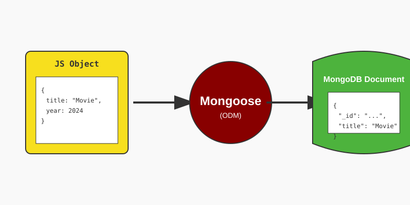
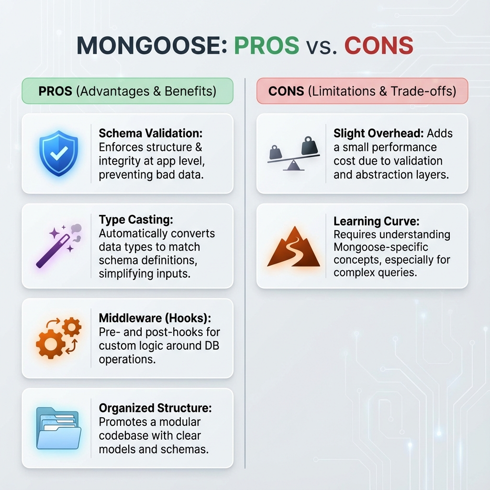

Welcome to this guide on Mongoose. If you've been working with MongoDB, you might have noticed how flexible it is. You can store almost anything in a collection without any complaints from the database. While this flexibility is powerful, it can also lead to chaos in large applications. That's where Mongoose comes in.
Using the MongoDB Native Driver is like working with a blank canvas. You have total freedom, but you also have to manage everything yourself. If you accidentally save a string where a number should be, MongoDB won't stop you.
Left: The chaos of unstructured data. Right: The order brought by Mongoose schemas.
Mongoose is an ODM library. It acts as a bridge between your JavaScript objects and the MongoDB documents. It allows you to define a Schema—a blueprint for your data.

Mongoose acts as a bridge, translating your code objects into database documents.
Flexible, but risky. No validation.
// Native Driver: Anything goes!
await collection.insertOne({
title: "Inception",
year: "2010", // String! (Should be Number)
randomField: "I don't belong here"
});
Structured and safe. Enforced by Schema.
// Mongoose: Strict validation
const movieSchema = new mongoose.Schema({
title: { type: String, required: true },
year: { type: Number, min: 1888 }
});
// This will THROW an error!
await Movie.create({
title: "Inception",
year: "2010" // Auto-converted to Number!
});
